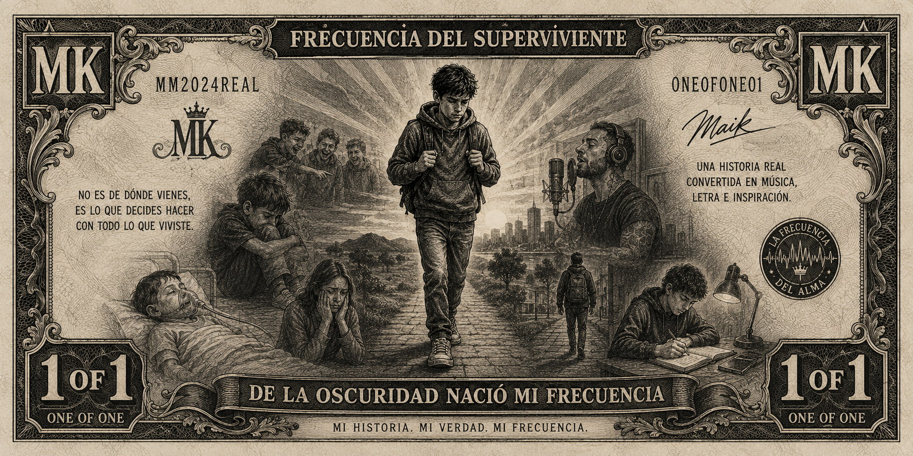
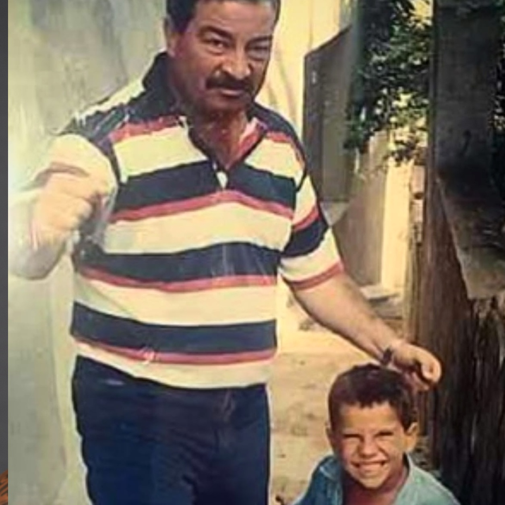
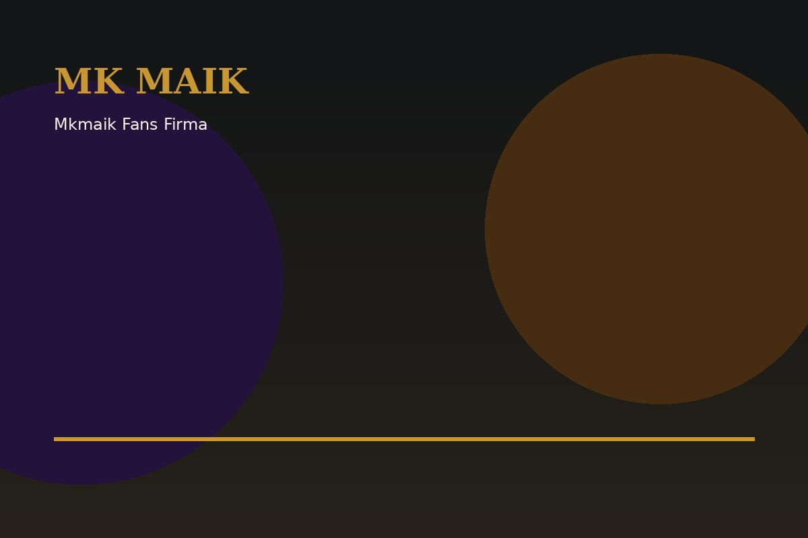
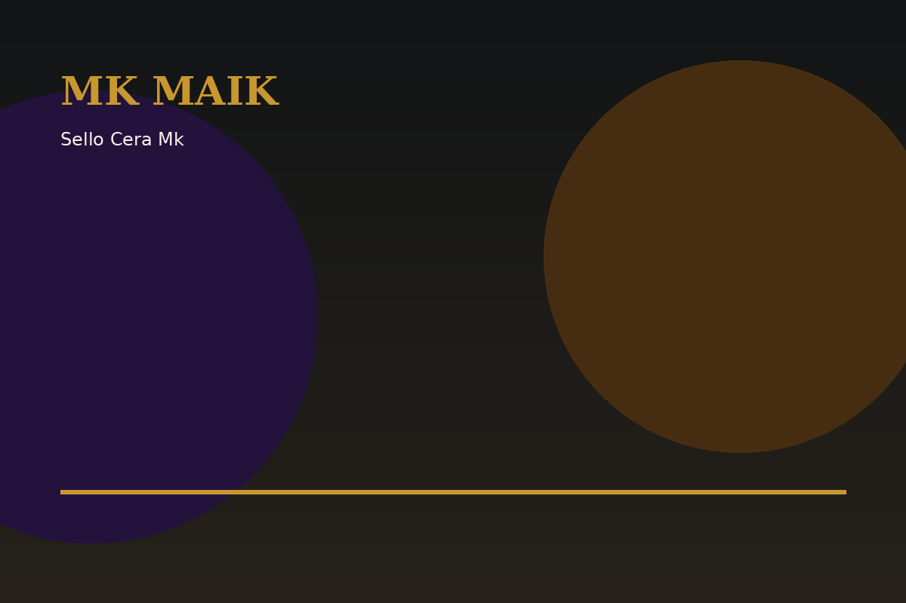
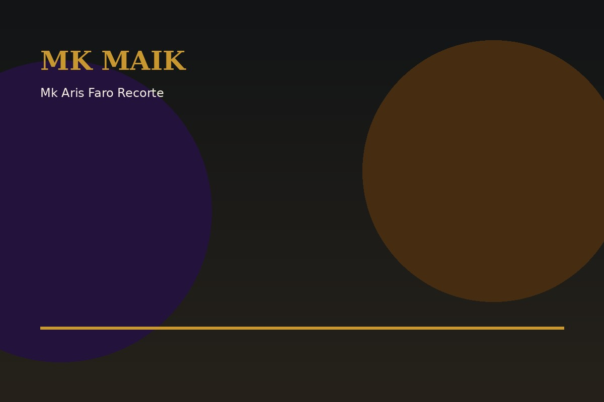

MK MAIK presenta
ONE OF ONE
Entra al universo de MK MAIK con música.
Entra al universo de MK MAIK con música.
Galicia · Argentina · Los Ángeles
La historia de un superviviente que convirtió cada caída en música, identidad y buena vibra.
Discografía
Canciones que cuentan una vida. Pulsa play y escucha cada frecuencia en su sitio.
Letra: Aris Gómez Olalla · Una historia real convertida en música.

Capítulo 0
Jesús Güimil Beiras, MK MAIK, nace en Vigo con raíces argentinas. Una vida marcada por la búsqueda de identidad, el bullying, la superación y una fuerza interior que terminó transformándose en música.
Su mensaje no nace de una pose: nace de una historia real. Del silencio nació su voz. De su voz, su legado.
Leer la historia completa

Calendario de eventos, conciertos y apariciones especiales.
Prensa · Radio · Televisión
La trayectoria de MK MAIK ha despertado el interés de medios de comunicación, emisoras de radio, plataformas audiovisuales y prensa escrita que han seguido su evolución artística y personal.

“De Galicia a Los Ángeles: una historia de superación compartida por prensa, radio y televisión.”

Fans · Comunidad · Propósito
Cada mensaje, cada abrazo y cada persona que se acerca después de una actuación me recuerda por qué sigo caminando. Mi música no termina cuando suena la última nota: empieza cuando alguien se siente menos solo.
A ese fan que me dio las gracias porque mi historia le dio fuerzas para seguir brillando, incluso después de haber sufrido bullying: gracias a ti. Tu valentía también forma parte de esta historia.
“Si mi historia ayuda a una sola persona a levantarse, entonces todo el dolor tuvo un propósito.”
Marcas
Mi contenido formó parte de conversaciones y publicaciones dentro del ecosistema digital de Coca-Cola, ampliando el alcance de mi mensaje.
Ver publicación Coca-Cola →Reconocimiento e interacción por parte de una marca internacional que apuesta por la creatividad, la innovación y las nuevas generaciones.
Ver Chamelo →La autenticidad transforma una historia personal en un legado.
Capítulo final · y comienzo
Un viaje real a través del silencio, el bullying, la búsqueda de identidad, la familia, la música y la transformación.

Pre-reserva oficial
Una historia real sobre identidad, bullying, heridas invisibles, música, familia, caída, búsqueda y transformación. Un viaje para quien necesita recordar que todavía puede levantarse.

Por qué existe este libro
Durante años pensé que algunas partes de mi vida debían quedarse escondidas. Pero entendí que una historia difícil puede convertirse en una herramienta para ayudar a otros.
Frecuencia del Superviviente nace de momentos reales: el rechazo, la búsqueda de identidad, la infancia, la familia, la calle, la música y esa decisión íntima de no rendirse.
“No importa de dónde vengas. Importa lo que decides hacer con todo lo que viviste.”
A quién va dirigido
Por qué comprarlo
Este libro no promete soluciones mágicas. Te muestra un camino vivido: cómo convertir el dolor en dirección, la vergüenza en voz y la historia personal en una frecuencia propia.
Porque habla desde la verdad de alguien que también tuvo que levantarse.
No desde la teoría, sino desde heridas, errores, aciertos y decisiones reales.
La música se convierte en símbolo de identidad, libertad y renacimiento.
En qué me ayudó a mí
Me ayudó a mirar atrás sin quedarme atrapado en el pasado. A entender mis heridas. A reconocer mis aciertos. A valorar mis logros. Y, sobre todo, a transformar una historia personal en algo que pueda servir a otros.
Convertí mi historia en música. Aprendí a hablar desde la autenticidad. Construí una comunidad alrededor de la superación. Pasé del silencio a compartir mi mensaje en medios, escenarios y redes.
Mi enfoque y mis valores
Contar la verdad sin disfrazarla.
Entender que cada persona carga una batalla invisible.
Recordar que una etapa difícil no define el final.
Honrar a quienes acompañan el camino.
Levantarse una vez más, incluso con miedo.
Convertir la energía vivida en algo que ilumine.
Pre-reserva
Déjame tu nombre y correo. Recibirás prioridad cuando se abra la venta, posibles extras exclusivos y noticias del lanzamiento del libro.


Contacto
Contrataciones, prensa, colaboraciones y proyectos con propósito.
info.artista@mkmaik.com